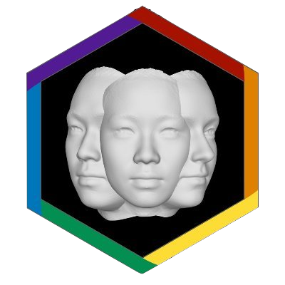
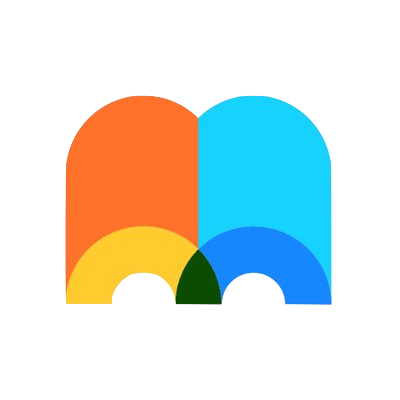
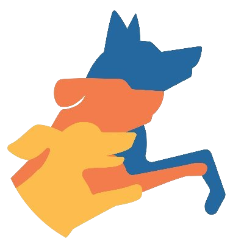
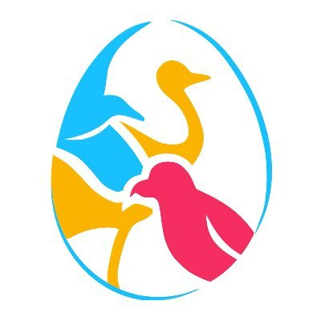
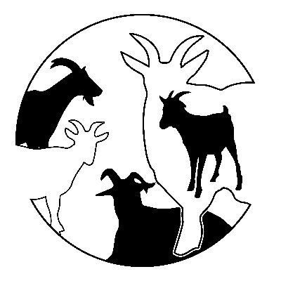
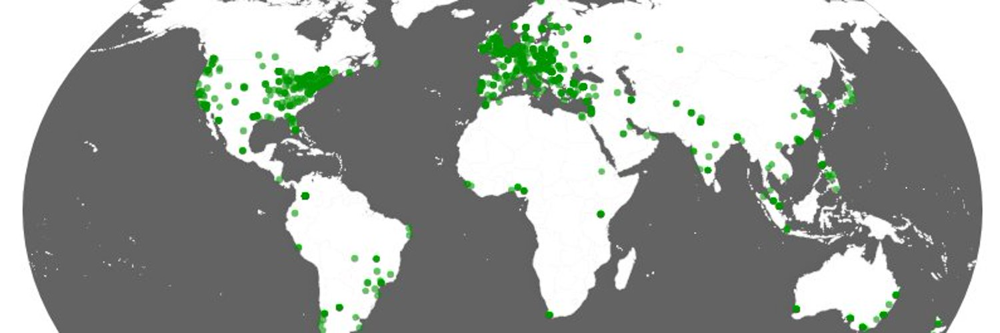
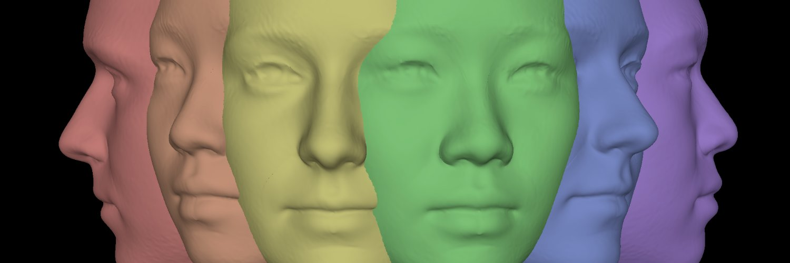

7 Gobernanza
7.1 Consejo Administrativo Provisional
Lo primero que necesita una organización es una junta directiva provisional que asuma el trabajo descrito en el resto de este manual. Habrá muchas decisiones que tomar al principio y será más fácil hacerlo con un equipo más pequeño de 5 a 10 personas dedicadas. Por muy democrática que quieras que sea una organización, la mayoría de los miembros no tendrán la capacidad de opinar sobre cada decisión.
Establece una lista específica de tareas que la junta interina debe realizar durante un periodo de tiempo concreto, que finalizará con la elección de sus sustitutos. He aquí algunas ideas:
- Nombre oficial y logotipo Section 7.2
- Seguimiento de los y las integrantes Section 7.3
- Prácticas de trabajo Section 7.4
- Política de autoría Section 7.5
- Código de conducta Section 7.6
- Establecer canales de comunicación Chapter 8
- Configurar las redes sociales Section 8.3
- Configurar herramientas de colaboración Chapter 9
- Crear un sitio web Chapter 10
7.2 Nombre y Logo
Reflexiona sobre el nombre oficial. Asegúrate de que es único, tiene un buen acrónimo o abreviatura y no tiene connotaciones negativas en otros idiomas. ManyXXXX es un estilo de nombre popular que indica que tu grupo tiene un propósito, valores y estructura similares a los de grupos como ManyBabies, ManyFaces, EEGManyLabs, ManyAnalysts, ManyPrimates, ManyDogs, ManyBirds, ManyGoats, ManyFishes, etc. También querrás que este nombre esté disponible en todos los servicios de redes sociales (Section 8.3) y herramientas (Chapter 9) en los que te inscribas, y que dispongas de un nombre de dominio para un sitio web (Section 10.5).
Asegúrate también de tener un buen logotipo. Necesitarás un logotipo cuadrado/circular para tu avatar en la mayoría de las redes sociales, y también una imagen tipo banner para algunas. Un buen logotipo es distintivo, claro en tamaños pequeños y no tiene demasiado texto. Varias siluetas de lo que estás estudiando parece ser una opción popular.
Haz el logo en un formato que no tenga pérdida, como PNG, y utiliza un fondo transparente (a menos que tu logo sea realmente cuadrado). Comprueba también cómo se ve tu logo en fondos oscuros y claros ( ve la parte superior izquierda de página para ver los logos de abajo en fondos claros y oscuros).











7.3 Seguimiento de la membresía
¿Cómo va a mantener un registro de las personas afiliadas? Una organización nueva probablemente no cobrará cuotas, pero querrá saber de algún modo quiénes son sus integrantes. Inevitablemente, llegará el momento donde podrás escribir algo como “Tenemos 1,350 personas afiliadas de 82 países de todo el mundo” o hacer un mapa de las personas afiliadas, por lo que necesitarán una forma de llevar un registro.
El formulario de registro de intereses (Section 6.1) puede servir como lista inicial de los y las miembros, pero probablemente quieras más información, como sus áreas de experiencia, los recursos que pueden aportar y las tareas que están dispuestos a asumir. ManyBabies tiene una brillante aplicación membership tracker que muestra sus miembros en todo el mundo.
Piensa en cómo llevarás la cuenta de los/as afiliados/as activos/as e inactivos/as. Puedes hacer que la afiliación dure para siempre (al menos hasta que se solicite la cancelación). La principal ventaja de esta estrategia es que el número de afiliados/as solo aumentará. Sin embargo, tendrás que lidiar con más correos electrónicos rebotados cada año y es difícil saber quién está siendo activo/a para efectos de planificación y capacidad. Como alternativa, se puede hacer que la afiliación sea por un periodo de tiempo determinado, como un año, y exigir que haya reincorporación cada año. Esto puede dar una visión más precisa de su afiliación, pero se corre el riesgo de perder a personas que simplemente se olvidaron de volver a afiliarse y es una molestia anual adicional para todas las personas.
7.4 Prácticas de trabajo
Consulta otras organizaciones científicas colaborativas y determina el modelo que quieres utilizar para decidir qué proyectos llevar a cabo. Si tu grupo está formado en torno a un proyecto ya bien articulado, puedes saltarte este paso.
Por ejemplo, el Psychological Science Accelerator tiene convocatorias formales de selección de estudios en las que las solicitudes de proyectos se presentan y luego son evaluadas por los revisores/as y por todos/as los/as miembros antes de que un comité de selección de estudios elija los proyectos que pueden llevarse a cabo, dada la capacidad actual de la red.
ManyBabies utiliza un formulario de propuesta de proyecto formal, pero no tiene convocatorias específicas con fechas límite. Actualmente, ManyFaces tiene un proceso mucho menos formal en el que los proyectos de trabajo se proponen en un canal de discusión y, una vez que el proponente considera que hay suficiente interés, se forma un grupo de trabajo.
7.6 Código de conducta
Un código de conducta establece los valores, las normas y las responsabilidades de los y las miembros de forma clara. Aunque un código de conducta en sí mismo no evita malos comportamientos, es el primer paso para señalar los valores de la organización.
Un código de conducta debe incluir (adaptado de How to Respond to Code of Conduct Reports)
- Una breve declaración que describa el objetivo del código de conducta
- Una lista de comportamientos inaceptables
- Una descripción de dónde se aplica el código de conducta
- Una lista de las posibles consecuencias de la violación del código de conducta
- Instrucciones detalladas, específicas y sencillas para denunciar una infracción del código de conducta
- Una lista de las personas que se encargarán de la denuncia del código de conducta
- Una promesa de que cualquier persona directamente involucrada en una queja se recusará
Existen varios recursos útiles para elaborar un código de conducta:
- Contributor Covenant: especializado en proyectos de software de código abierto
- Cómo responder a las quejas del código de conducta: Consejos con mas detallados
- Política antiacoso de la comunidad del feminismo geek
Y aquí hay algunos modelos útiles para un código de conducta: